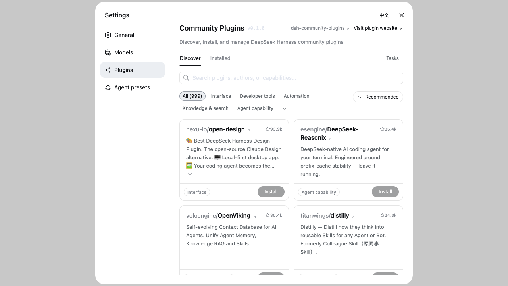

Browse __COUNT__ plugins
GitHub
npm
中文
Browse __COUNT__ plugins
GitHub
npm
中文
Community Plugins
inside DeepSeek Harness
Browse and search __COUNT__ community plugins, install with one click — most go live without even a restart. Updates, uninstall, live install progress. No telemetry, ever.
dsh plugin --profile web add dsh-community-pluginsdsh web → Settings → Community Plugins. That's the whole setup.What dsh-pluginhub is

Everything, in one place
The full curated catalog from dsh-plugin-hub — categories, star counts, top/new sorting, bilingual descriptions.
Fast installs
npm tarballs are preferred over full-repo GitHub downloads whenever a plugin publishes to npm — typically seconds.
No restart, mostly
Most plugins are live right after a page refresh. Updates and uninstalls take one click too — the pluginhub even updates itself.
Zero jargon
Missing a component? The pluginhub detects it and fixes it with one button. You never see a terminal.
Guard rails
Installs are restricted to the curated registry, build scripts stay blocked by default, and terminal-surface plugins are flagged before you install them.
Private by default
Community Plugins sends no telemetry; browsing only reads the public catalog API.